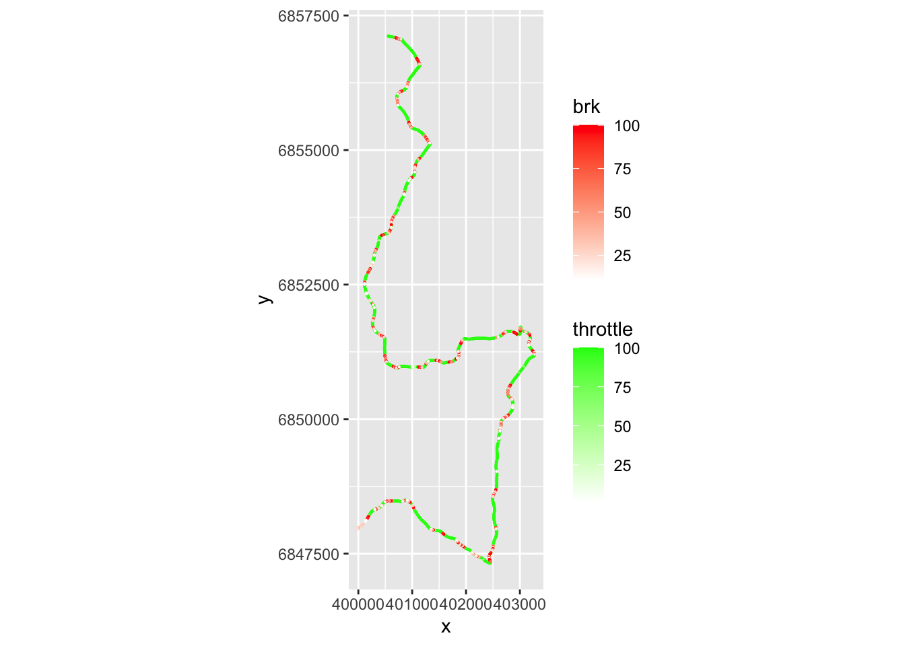
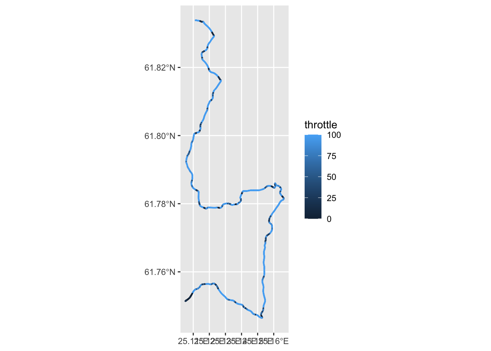
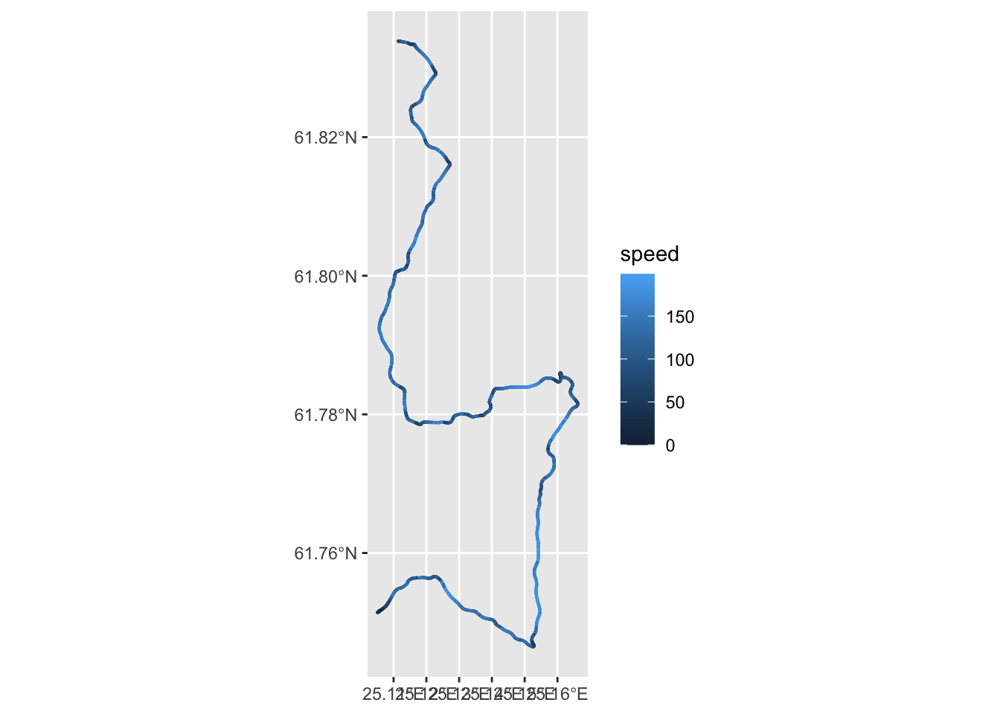

14 Looking At Braking Behaviour
Where do we brake?
#library(ggspatial)
# annotation_spatial(trj_ogier ) +
# layer_spatial(trj_ogier, aes(alpha = brk), color='red',size=0.3)
#https://github.com/eliocamp/ggnewscale
# Multiple color scales
# ?doesn't work with geom_sf which overplots?
library(ggnewscale)
ggplot() + stat_sf_coordinates(aes( color=throttle),size=0.1,
geom = "point",
data=trj_ogier %>% filter(throttle>0)) +
scale_color_gradient(low = "white", high = "green") +
new_scale_color() +
scale_color_gradient(low = "white", high = "red")+ stat_sf_coordinates( aes( color=brk), size=0.1,
geom = "point",
data=trj_ogier %>% filter(brk>0)
) +
# How do we get the correct projection
#_coord_map()
# Already rectilinear...
coord_fixed()
14.1 Throttle Comparison
How do our two drivers compare in their use of the throttle?
ggplot() +
geom_line(data=(trj_ogier %>% filter(cum_dist>=1000 & cum_dist<=2000)),
aes(x=cum_dist,y=throttle), color='red') +
geom_line(data=(trj_evans %>% filter(cum_dist>=1000 & cum_dist<=2000)),
aes(x=cum_dist,y=throttle), color='blue')
With smoothing:
library(zoo)##
## Attaching package: 'zoo'## The following objects are masked from 'package:base':
##
## as.Date, as.Date.numericggplot() +
geom_line(data=trj_ogier%>% filter(cum_dist>=1000 & cum_dist<=2000) %>%
mutate(smooth_throttle=rollmean(throttle, k = 3, fill = NA)),
aes(x=cum_dist,y=smooth_throttle), color='red') +
geom_line(data=(trj_evans %>% filter(cum_dist>=1000 & cum_dist<=2000) %>%
mutate(smooth_throttle=rollmean(throttle, k = 3, fill = NA))),
aes(x=cum_dist,y=smooth_throttle), color='blue')## Warning: Removed 2 row(s) containing missing values (geom_path).
## Warning: Removed 2 row(s) containing missing values (geom_path).
We can also explore adding throttle and brake data to the speed trace.
theme_black = function(base_size = 12, base_family = "") {
theme_grey(base_size = base_size, base_family = base_family) %+replace%
theme(
# Specify axis options
axis.line = element_blank(),
axis.text.x = element_text(size = base_size*0.8, color = "white", lineheight = 0.9),
axis.text.y = element_text(size = base_size*0.8, color = "white", lineheight = 0.9),
axis.ticks = element_line(color = "white", size = 0.2),
axis.title.x = element_text(size = base_size, color = "white", margin = margin(0, 10, 0, 0)),
axis.title.y = element_text(size = base_size, color = "white", angle = 90, margin = margin(0, 10, 0, 0)),
axis.ticks.length = unit(0.3, "lines"),
# Specify legend options
legend.background = element_rect(color = NA, fill = "black"),
legend.key = element_rect(color = "white", fill = "black"),
legend.key.size = unit(1.2, "lines"),
legend.key.height = NULL,
legend.key.width = NULL,
legend.text = element_text(size = base_size*0.8, color = "white"),
legend.title = element_text(size = base_size*0.8, face = "bold", hjust = 0, color = "white"),
legend.position = "right",
legend.text.align = NULL,
legend.title.align = NULL,
legend.direction = "vertical",
legend.box = NULL,
# Specify panel options
panel.background = element_rect(fill = "black", color = NA),
panel.border = element_rect(fill = NA, color = "white"),
panel.grid.major = element_line(color = "grey35"),
panel.grid.minor = element_line(color = "grey20"),
panel.margin = unit(0.5, "lines"),
# Specify faceting options
strip.background = element_rect(fill = "grey30", color = "grey10"),
strip.text.x = element_text(size = base_size*0.8, color = "white"),
strip.text.y = element_text(size = base_size*0.8, color = "white",angle = -90),
# Specify plot options
plot.background = element_rect(color = "black", fill = "black"),
plot.title = element_text(size = base_size*1.2, color = "white"),
plot.margin = unit(rep(1, 4), "lines")
)
}What happens if we try to colour the speed line according to the throttle and brake percentages?
ggplot() +
#geom_line(data=trj_ogier %>% filter(cum_dist>=1000 & cum_dist<=2000),
# aes(x=cum_dist,y=speed), color='white', size=4) +
geom_line(data=trj_ogier %>% filter(cum_dist>=1000 & cum_dist<=2000),
aes(x=cum_dist,y=speed, alpha=throttle), size=1, color="green") +
geom_line(data=trj_ogier %>% filter(cum_dist>=1000 & cum_dist<=2000),
aes(x=cum_dist,y=speed-3, alpha=brk), color="red", size=1) +
geom_line(data=trj_ogier %>% filter(cum_dist>=1000 & cum_dist<=2000),
aes(x=cum_dist,y=throttle-50, alpha=100-brk), size=1, color="green") +
geom_line(data=trj_ogier %>% filter(cum_dist>=1000 & cum_dist<=2000),
aes(x=cum_dist,y=brk-50, alpha=100-throttle), color="red", size=1)+
theme_black()+ theme(legend.position="none")## Warning: `panel.margin` is deprecated. Please use `panel.spacing` property
## instead
ggplot(data=telem_df_full) + geom_sf(aes(color=throttle), size=0.1)
ggplot(data=telem_df_full) + geom_sf(aes(color=-brk), size=0.1)